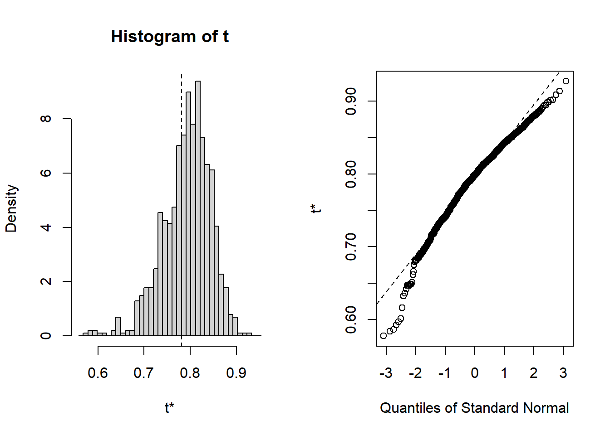

Capítulo 19 Motivación
En estadística nos enfrentaremos a una número importante de modelos que pueden usarse para explicar el fenómeno presente en nuestros datos. Y además para cada uno de ellos siempre existirá la pregunta ¿qué variables deberíamos incluir?
Para dar respuesta a esta necesidad es importante contar con un esquema de selección de modelos que nos permita llegar al más adecuado de manera óptima.
Un esquema de selección debe combinar, por un lado, una estrategia de busqueda en el espacio de modelos posibles y, por otro lado, un criterio de comparación que nos permita evaluar la calidad de cada modelo.
En ocasiones será sencillo escoger al grupo de modelos candidatos sin embargo para otros problemas las psoibilidades pueden ser enormes.
Cuando el número de posibles modelos es muy grande generalmente se emplea una técnica ambiciosa que parte de un modelo inicial y en cada paso se explora el espacio de modelos posibles escogiendo aquel que sea mejor de entre los cercanos al último explorado.
19.0.1 Ejemplo
Para un modelo lineal cuyo un espacio de inputs de tamaño p hay \(2^p\) posibles sub-modelos. Si p fuera suficientemente pequeño podríamos listar todos los modelos sin embargo en la práctica p suele ser grande.
En este caso, para llegar a un modelo adecuado suele utilizarse alguna de las siguientes dos técnicas:
Forward Selection: Se empieza con el modelo sin variables y éstas se agregan una por una escogiendo aquella que cumple cierto criterio e.g. que la variable pase la prueba de significancia o que al agregarla al modelo el accuracy mejore en cierto grado.
Backward Selection: Empezamos con el modelo de todas las variables y vamos quitando aquellas menos importantes de acuerdo a algún otro criterio e.g. nivel de significancia para el modelo.
19.1 Esquemas básicos
Akaike Information Criterion
Bayesian Information Criterion
Cross-validation
El esquema Akaike Information Criterion (AIC) busca maximizar la probabilidad de seleccionar el mejor modelo bajo el supuesto de que éste estuvo dentro del espacio de modelos evaluados.
Por otro lado, los esquemas Bayesian Information Criterion (BIC) y validación cruzada buscan optimizar el desempeño predictivo del modelo elegido.
19.1.1 Akaike Information Criterion.
Es una aproximación asíntótica a la divergencia Kullback-Leibler entre el modelo de interés y la verdad. También llamada entropía relativa, se define como la esperanza del logaritmo de las diferencias entre P y Q.
Supongamos una colección de modelos \(\mathbb{M} = \{\mathcal{M_1},\dots,\mathcal{M_K}\}\) donde \(\mathcal{M_k}:=\{f(y|\theta_k):\theta_k\in\Theta_k\}\).
Para cada \(\mathcal{M}_k\) sea \(\hat{\theta}_k\) el estimador máximo verosímil y \(\hat{f}_k=f(.|\hat{\theta}_k)\).
Usando la divergencia Kullback-Leibler podemos calcular \[D(f_0||\hat{f}_k)=\int f_0\ log(f_0)-\int f_0\ log(\hat{f}_k)\]
Dado que en realidad observamos la distribución empírica podemos estimar el término negativo como \[\hat{H}_k=\frac{l_k(\hat{\theta}_k)}{n}\]
Akaike propuse el siguiente estimador: \[\hat{H}_k=\frac{l_k(\hat{\theta}_k)-dim(\Theta_k)}{n}\]
De donde se deriva el número AIC como: \[AIC(\mathcal{M}_k)=-2n \hat{H}_k\]
Un error común es pensar que el AIC solo puede usarse en modelos anidados sin embargo puede usarse entre modelos distintos siempre que la verosimilitud se calcule con los mismos datos.
19.1.2 Bayesian Information Criterion.
BIC es una aproximación para la selección de modelos Bayesiana a posteriori, máxima, dados los datos.
Supongamos que establecemos una probabilidad a priori \(p_k\) para el modelo \(\mathcal{M}_k\) y una a priori para \(\theta_k|\mathcal{M}_K\) de \(\pi_k\).
Buscamos elegir el modelo con la mayor probabilidad a posteriori; del teorema de Bayes la log-probabilidad a posteriori es: \[log(\mathbb{P[\mathcal{M}|_1,...,Y_n]})=const+log(p_k)+log(\int exp(l_k(\theta_k))\pi_k(\theta_k) d\theta_k\]
De donde derivamos que el mejor modelo se obtiene al minimizar \[BIC(\mathcal{M}_k)=-2l_k(\hat{\theta}_k)+dim(\Theta_k)log(n)\]
Comparado con el AIC, se impone una mayor penalización por cada parámetro adicional, por lo que el BIC tenderá a seleccionar modelos más simples.
19.1.3 Cross-validation
Si buscamos elegir el modelo cuyo desempeño predictivo sea el mejor, lo ideal es contar con un conjunto de prueba aislado. En ausencia de esto podemos probar el modelo con una parte de los datos de entrenamiento.
Esto puede hacerse repetidamente escogiendo porciones distintas cada vez.
19.1.3.1 V-fold cross-validation
Los datos se dividen en \(V\) subconjuntos del mismo tamaño. En cada paso usamos \(V-1\) subconjuntos para estimar los parámetros (entrenar el modelo) y probamos en el subconjunto restante.
Repertimos \(V\) ocasiones y se reporta el error promedio.
Elecciones comunes del valor \(V\) son: 5, 10 y n.
Para n se define leave-one-out cross validation. Donde se usan todos los datos salvo una observación y se predice para ella.
Para el caso continuo se utiliza MSE y para clasificación el número de observaciones mal clasificadas.
19.2 Esquemas adicionales
Bootstrap.
Matrices de confusión.
Information Value.
Curvas CAP y ROC.
19.2.1 Bootstrap
Dado que nuestros modelos están construidos con la información que pudimos observar y no con la información de la población, surgen las siguientes preguntas:
¿Hasta qué grado podemos confiar en que nuestros resultados serán ciertos para toda la población?
¿Qué tanto podrían variar bajo distintos sesgos en la información usada?
La técnica de bootstrapping trata de resolver estas preguntas y con ello evaluar la calidad de un modelo a través del resampleo de estadísticos de un modelo.
19.2.1.1 Ejemplo
Utilizando la técnica de bootstrapping evaluaremos las variaciones en la \(R^2\) de un modelo de regresión lineal.
En primer llugar debemos definir una función que extraiga la(s) métrica(s) de interés, en este caso la \(R^2\):
library(boot)
r2 <- function(formula, data, index){
d <- data[index,]
mod <- lm(formula, data = d)
return(summary(mod)$r.square)
}Posteriormente usamos el paquete boot para aplicar la técnica y evaluar las variaciones de la \(R^2\) bajo diferentes escenarios muestrales:
Podemos imprimir los resultados:
##
## ORDINARY NONPARAMETRIC BOOTSTRAP
##
##
## Call:
## boot(data = mtcars, statistic = r2, R = 1000, formula = mpg ~
## wt + disp)
##
##
## Bootstrap Statistics :
## original bias std. error
## t1* 0.7809306 0.01164103 0.05134422O bien, podemos graficarlos para leerlos más facilmente:

19.2.1.2 Ejercicios
- Aplique la técnica de bootstrapping para evaluar variaciones en la \(R^2\) de los siguientes modelos al mismo tiempo:
mpg~data$wt+disp
mpg~data$wt+disp+cyl
mpg~data$wt+disp+cyl+hp
- Aplique la técnica de bootstrapping para otro estadístico que le parezca relevante.
19.3 Information Value & WoE
Derivaron del uso de regresión logística particularmente en problemas de riesgo de crédito.
Se utilizan para medir qué tan bien una variable logra distinguir una respuesta binaria.
19.3.1 Weight of Evidence (WoE)
Se calcula de la siguiente forma:
\[WoE_{x=i} = log(\frac{P[y=1 |x=i]}{P[y=0|x=i]})\]
19.3.2 Information Value
Su cálculo se realiza de la siguiente forma:
\[IV_{x_i} = (P[Y = 1|x=i]-P[y=0|x=i])*WoE_{x_i}\]
19.3.2.1 Interpretación del Information Value
| IVx | Poder predictivo |
|---|---|
| <0.02 | Variable no útil |
| 0.02-0.1 | Poder débil |
| 0.1-0.3 | Poder medio |
| 0.3-0.5 | Poder alto |
| 0.5 | Sospechosa |
19.4 Matrices de confusión (y derivados…)
Son una forma de medir el desempeño de un algorítmo de clasificación.
De ellas derivan diferentes medidas que nos ayudan a entender más a fondo el desempeño de nuestro algorítmo.
En un problema de clasificación de 2 clases, la matriz se construye con la tabla cruzada entre las clases reales y las clases ajustadas/predichas
| Positivo Real | Negativo Real | |
|---|---|---|
| Positivo predicho | TP | FP |
| Negativo predicho | FN | TN |
Las matrices de confusión se pueden extender a problemás de más de dos clases.
19.4.1 Estadísticos derivados de las matrices de confusión
- \(Sensitivity = \frac{TP}{TP+FN}\)
También llamada tasa de verdaderos positivos, mide la proporción de positivos predichos de entre los verdaderos reales.
- \(Specificity = \frac{TN}{TN+FP}\)
O tasa de verdaderos negativos, mide la proporción de negativos predichos de entre los negativos reales.
- \(Prevalence = \frac{TP+FN}{TP+FP+TN+FN}\)
Mide cuántos valores reales hay
- \(PPV = \frac{sensitivity*prevalence}{(sensitivity*prevalence)+((1-specificity)*(1-prevalence))}\)
PPV: positive predicted values
- \(NPV = \frac{sensitivity*(1-prevalence)}{((1-sensitivity)*prevalence)+((specificity)*(1-prevalence))}\)
NPV: negative predicted values
- \(Detection \ rate = \frac{TP}{TP+FP+TN+FN}\)
Mide cuántos verdaderos positivos esta detectando el modelo
- \(Detection \ prevalence = \frac{TP+FP}{TP+FP+TN+FN}\)
Mide cuántos positivos predichos tiene el modelo
\(Balanced \ accuracy = \frac{sensitivity+specificity}{2}\)
\(Precision = \frac{TP}{TP+FP}\)
Proporción de verdaderos positivos de entre los positivos predichos
- \(Recall = \frac{TP}{TP+FN}\)
Proporción de verdaderos positivos de entre los positivos reales
- \(F-beta = \frac{(1+beta^2)*precision*recall}{(beta^2*precision)+recall}\)
19.5 Curvas AUC-ROC
Muchos algoritmos de clasificación no generan directamente el vector de clases predichas sino que primero obtienen el vector de probabilidades de pertenencia a cada clase.
Dado un umbral o punto de corte para el vector de probabilidades se puede generar entonces un vector de clases asociado a ese vector.
Es claro que el valor de ese umbral afectará directamente al accuracy de clasificación del modelo.
Las curvas AUC-ROC nos permiten medir el desempeño del algorítmo bajo distintos umbrales.
ROC es una curva probabilística mientras que AUC es una medida de separación.
19.5.1 Construcción de una curva AUC-ROC
Para generar una curva de ROC debemos graficar la métrica 1-specificity vs sensitivity.
Para obtener el valor AUC debemos calcular el área bajo la curva ROC.